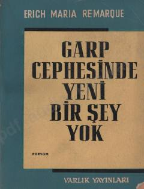

GCBirinchi jahon urushining fojiali oqibatlari va askarlar taqdiridan hikoya qiluvchi mashhur roman.
Ushbu asar Birinchi jahon urushi davridagi shafqatsiz voqealarni va urush girdobida qolgan yosh avlod taqdirini ochib beradi. Erich Maria Remarque o'zining shaxsiy tajribalari va realistik tasvirlari orqali urushning inson ruhiyatiga yetkazadigan vayronkor ta'sirini ko'rsatib bergan. Kitobda askarlarning kundalik hayoti, qo'rquv va yo'qotishlari chuqur fojiaviy ruhda bayon etilgan.